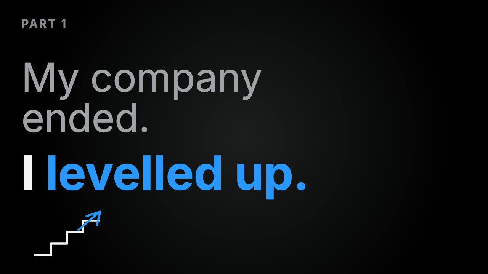
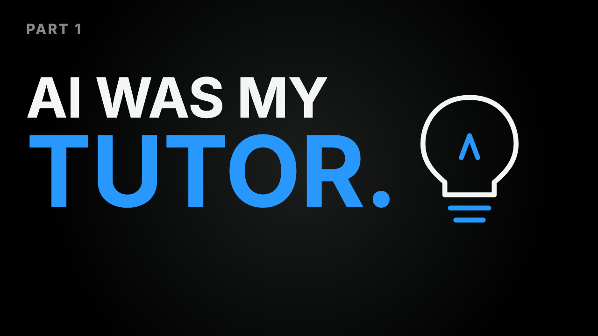
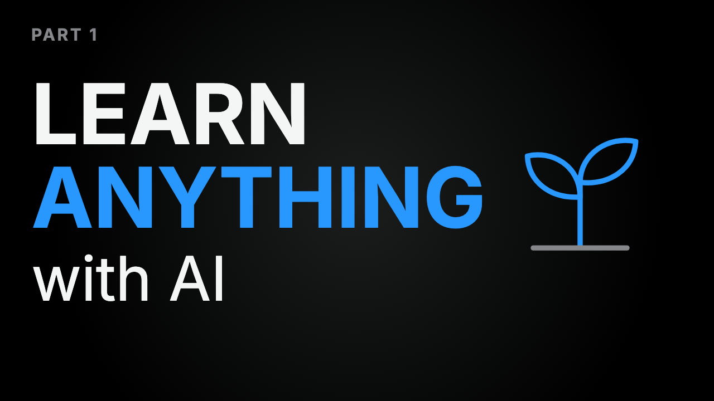

📣 Title, description and thumbnail
The publish copy for Part 1 of 3: How I Taught Myself Anything with AI (Closing My Company Was the Test), ready to paste into YouTube. Generated from spec/publish.json by scripts/build-publish-page.mjs; thumbnails by scripts/build-thumbnails.sh.
These are drafts for you to choose from. The description makes the same claims as the script, so have the practitioner read it too. One placeholder in square brackets needs your input.
1. Title
Lead with the subject or the viewer's question, name the series, and promise no outcome. Under 60 characters shows in full on phones.
| Option | Chars | Why | |
|---|---|---|---|
| ⭐ Closing My Company Taught Me How to Learn with AI RECOMMENDED | 49 | A real story with a twist: an ending that became a lesson. Concrete enough to be believable, broad enough for anyone facing change. No outcome promised. Thumbnail C | |
| AI Was My Tutor When My Company Closed | 38 | Short and personal (38 characters, never cut off). The phrase 'AI was my tutor' is the film's idea in four words. Pairs with Thumbnail A. Thumbnail A | |
| How I Taught Myself a Whole New Process with AI | 47 | A clear how-to promise for people who search for learning with AI. Less emotional than the story titles. Thumbnail B | |
| Facing a Big Change? Learn It with AI | 37 | Opens with the viewer's own question, so it speaks to the widest audience. Vaguer about what the video shows. Pairs with Thumbnail D. Thumbnail D | |
| Learn Anything with AI: My Real Test (Part 1) | 45 | Bold promise, then grounds it in a real test. 'Anything' is a stretch: the film shows one process, so this one leans most on hype. Thumbnail B |
2. Description
The first two lines show before "Show more", so they carry the hook. Chapters come from the current scene timings: retime them after the final edit.
Every big change starts with something you don't know yet. Mine was closing my own UK company, and I used AI as my tutor to learn the whole process. This is Part 1 of 3: how to teach yourself something completely new with AI, using a real company liquidation as the example. In this video: • Five steps to learn anything new, with AI as a tutor (not a lawyer) • Plain-English explanations: IR35, HMRC, insolvency practitioners, MCP, n8n and AI agents • What it cost and how long it took • The honest part: what AI can't do, and why the professional decides • Three lessons from my inbox • Workflows plus AI agents, and why I share the real journey CHAPTERS 0:00 Every big change starts with something new 0:17 Part 1 of 3: learning anything with AI 0:39 The goal: transformation 1:03 How I learned it: five steps with AI 1:44 What it cost and how long it took 2:08 The honest part 2:32 Three lessons from my inbox 2:56 Workflows plus AI 3:19 From shame to grace, and Part 2 3:40 Disclaimer + outro NEXT Part 2, how I built the workflows and AI agents: [PART 2 LINK: add when it is published] Learning to build with AI? Join the Delivery Pilot community on Skool: https://www.skool.com/delivery-pilot-8938/ AI organises and explains. The insolvency practitioner decides. This is information, not legal advice. #AI #LearnWithAI #PersonalGrowth
1347 characters (YouTube allows 5,000).
3. Tags and hashtags
learn with AI, AI tutor, self learning, personal transformation, career change, learn anything, UK contractor, IR35, closing a UK company, company liquidation, insolvency practitioner, HMRC, AI agents, n8n workflows, MCP, Skool
The three hashtags at the end of the description show above the title.
Pinned comment (suggestion)
Suggestion: "What's the one thing you'd learn if AI were your tutor? Tell me below, and I'll pick some for Part 2." Keep it a question, and do not promise advice on individual cases.
4. Thumbnail

⭐ C: My company ended. I levelled up. RECOMMENDED
A turn in six words: the grey line is the loss, the blue line is the growth, and the steps drawing from the film. The right half is kept clear for a photo of your face, which would make it the strongest option.
thumb-c.jpg: 1280 x 720, 55 KB (limit 2 MB). Download JPG · HTML source

Small-size check (168 x 94)

A: AI was my tutor.
The film's core idea in four words with the lightbulb drawing. Matches the keynote look of the video, so the click delivers what it shows.
thumb-a.jpg: 1280 x 720, 54 KB (limit 2 MB). Download JPG · HTML source

Small-size check (168 x 94)

B: Learn anything with AI
The broadest hook with the growth sprout. Biggest words, best at small size; 'anything' overpromises a little.
thumb-b.jpg: 1280 x 720, 61 KB (limit 2 MB). Download JPG · HTML source

Small-size check (168 x 94)
D: What's your next chapter?
A question to the viewer over the mountain image from Scene 8 (a fal.ai mood plate, no text in it). The most emotional, the least specific about AI.
thumb-d.jpg: 1280 x 720, 64 KB (limit 2 MB). Download JPG · HTML source

Small-size check (168 x 94)
Rules these follow
- 1280 x 720, 16:9, JPG, under 2 MB (YouTube's guidance).
- Six words or fewer, large enough to read at 168 x 94 pixels.
- All text is HTML in Inter (the film's font, SIL OFL, files in thumbnails/fonts/), never AI-drawn.
- The film's look: black, white, one blue accent, the same drawings as the video.
- No figures, no names, no personal data, no fake documents.
- Do not promise an outcome (no 'fixed', 'solved' or 'guaranteed').
- With a clear photo of your face on the clear side, a thumbnail usually does better: expression matters more than polish.
5. Before you publish
- Pick a title and a thumbnail (the options below are for the Draft v13 angle; the red-tape options are in the git history).
- Replace [PART 2 LINK] once Part 2 is published.
- Add a clear photo of your face to Thumbnail C (right side), or say no.
- Have the practitioner read the description as well as the script: it makes the same claims.
Tick these off on the release checklist.